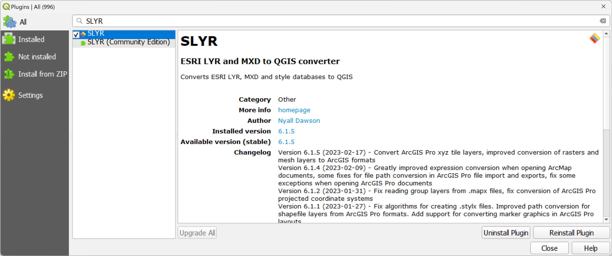

Frequently Asked Questions
Have a question? Check the entries below for an answer.
If the answer to your question is not here, please email us at North Road Support
Cost of SLYR Plugin
At the time of writing, to purchase the SLYR Plugin costs €1200. For those located outside of Europe, the cost will be as per the conversion rate at the time of issuing the invoice.
How many users will a licence cover
The SLYR licence agreement covers use by mulitple users in the same physical location i.e. an office address. It will also cover remote users that are attached to the defined physical location. If you have multiple locations that require use of the licence, please let us know and we will assess each case on an individual basis.
How to run the tool outside of QGIS
While it's possible to call the Python modules directly from standalone scripts, this is not recommend and is not officially supported by North Road. However, the official endorsed way of running the tools outside of QGIS is to use qgis_process.
Purchase process
If you would like to to purchase SLYR send us an email. As we often deal with clients in Europe and America, there is often a lag due to the time differences as we are located in Queensland, Australia (AEST, GMT+10).
To speed up the process, include the details below in your email so we can produce an invoice for you straight away. If you need a quote first, let us know in the email and provide the same details listed below.
To create an invoice or quote, we require the following information:
Organisation name/Your name
Office address
VAT number (if in Europe)
Purchase order number (if required)
Expected number of users
Type of users (in office/remote)
When we receive payment (credit card, bank transfer or PayPal), we will send you the licence and instructions for using SLYR.
Remote Users
We work remotely too, so we know how you need to have access to all of your tools. If you are attached to an office location, but work remotely, you are covered under our license agreement.
Student versions
Unfortunately we do not offer a student version of SLYR. We recommend you approach your institution to purchase SLYR.
Support
North Road offers a high level of support to all SLYR purchases. You can contact us at anytime via email.
If there is a bug we will fix it to the best of our abilities and release it as soon as we can.
If you wish a tool to work in a certain way i.e. develop a new feature, and if there are no barriers to developing it (software constraints in QGIS/ESRI), we will attempt to do it.
If it is something that will require a high level of development, you can consider whether to join the current Hall of Fame and sponsor its development.
Trial versions
Evaluation versions of the tool are not available. If you require a sample to evaluate prior to purchasing, email QGIS or ESRI files to North Road Support and we will convert it at no cost.
For each conversion, send through these files
| Source | File type to send |
|---|---|
| ESRI | .aprx, .mapx, .mxd |
| QGIS | .qgs .qgz |
Version updates
SLYR is updated many times during the year, at least once per quarter. To find out what has been updated in the latest version, check out the changelog in the QGIS Plugin Manager. Checkout Troubleshooting on how to update your SLYR version.

What licences do I need?
SLYR is designed so that you can push out ESRI products without the need of an ESRI licence as you undetake all SLYR operations in QGIS. You only need to have QGIS installed. However, if you wish to view the output in an ESRI environment, you will need an appropriate type of licence for the file type. For more information on files types and the software needed, check out Fileformat's GIS list.
What QGIS version do I need?
The latest QGIS version is always the best as we update SLYR to meet the latest versions. However, SLYR will work with older versions - we recommend using versions from v3.16 onwards.